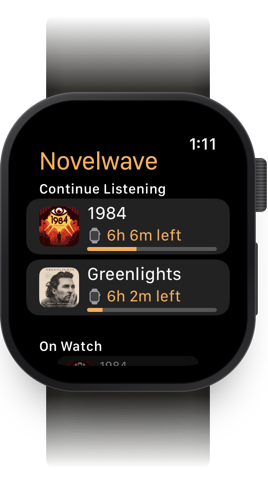
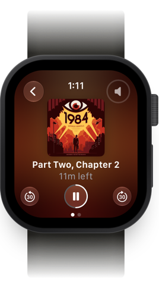

Yes, you can listen to your own audiobooks on Apple Watch without your iPhone. The book’s audio needs to be on the watch, and you need Bluetooth headphones. Novelwave does this for audiobooks you own as files, whether that’s a Libro.fm download, a LibriVox recording or a CD you ripped: your library reaches the watch through iCloud, you download a book to it once, and from then on the watch plays it on its own.
Step 1: Add your books on the iPhone
Importing happens on the iPhone. In Novelwave’s Library, tap + and choose Local Files or iCloud Drive, then pick your files. A book that comes as a single file is usually an M4B (see how to play M4B audiobooks on iPhone), and one that comes as a folder of tracks is usually MP3 (see how to play MP3 audiobooks on iPhone).
Editing, moving and exporting books stay on the iPhone too. The watch is for listening.
Step 2: Install Novelwave on the watch
Install it from the App Store on your Apple Watch, or from the Watch app on your iPhone. You’ll need watchOS 11 or later. Make sure the watch and the iPhone are signed in to the same Apple Account: the watch syncs your library through iCloud by itself, so your shelves, progress and bookmarks appear on your wrist.
Step 3: Download a book to the watch
- Keep your iPhone nearby.
- On the watch, swipe left on the audiobook to download it. Or, on the iPhone, swipe on the audiobook in Library and choose Send to Apple Watch.
- Leave the iPhone close until the download finishes.
You can pause or resume a transfer while it runs, and remove a book from the watch when you’re done with it.
Why the iPhone has to be close: watchOS has no iCloud Drive, so the audio of books you imported from local files or iCloud Drive reaches the watch through the iPhone. It’s only needed while the download runs. After that, the book lives on the watch.


Step 4: Connect headphones and go
On the watch, open Settings, then Bluetooth, and connect your headphones. Open the book in Novelwave and press play. Your iPhone can stay at home.
On the watch you have the things you reach for mid-walk:
- Speed, for when the narrator is in less of a hurry than you are.
- A sleep timer, for listening in bed without the phone.
- Chapters, to jump back to where you drifted off.
- Bookmarks with dictated notes, to keep a line you’ll want again.
- Complications, so the book is on your watch face.
Your place syncs with iCloud, so the iPhone and iPad pick up where the watch left off. And when the iPhone is the one playing, the watch works as its remote instead.
Why Novelwave
I wanted the watch to be a real place to listen, not just a remote. Novelwave on Apple Watch browses your whole library, plays downloaded books on its own or controls the iPhone, and keeps your place, bookmarks and shelves in step across iPhone, iPad and watch.
It works with the files you own, in M4B, M4A, MP3, AAC, Opus, FLAC, WAV and AIFF, with no account, no ads and no tracking. See everything Novelwave does.
Questions
Do I need a cellular Apple Watch?
No. Once a book is downloaded, the watch plays it on its own through your Bluetooth headphones.
Can I listen to Audible or Apple Books audiobooks on my watch with Novelwave?
No. Audible’s AAX files and Apple Books purchases are protected with DRM and stay in their own apps. Novelwave plays files you own that aren’t DRM‑protected.
Where can I get audiobooks to put on my watch?
Libro.fm sells DRM‑free audiobooks you download from its website as MP3 or M4B. LibriVox has public‑domain recordings in both formats. Downpour and some publishers’ own stores sell DRM‑free copies too, and audiobook CDs you’ve ripped work just as well.
Can I remove a book from the watch when I’m done?
Yes. Removing the download from the watch keeps the book in your library, with your place in it.
Something isn’t working. Where do I ask?
The Support page answers the common questions, and you can email me from there.